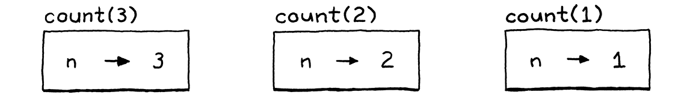
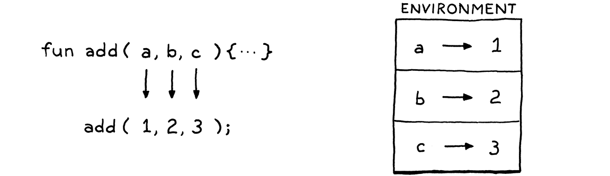
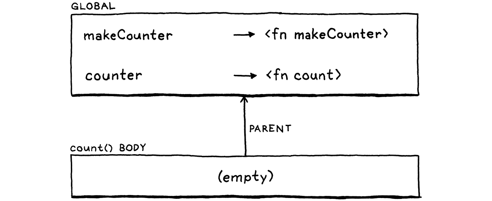
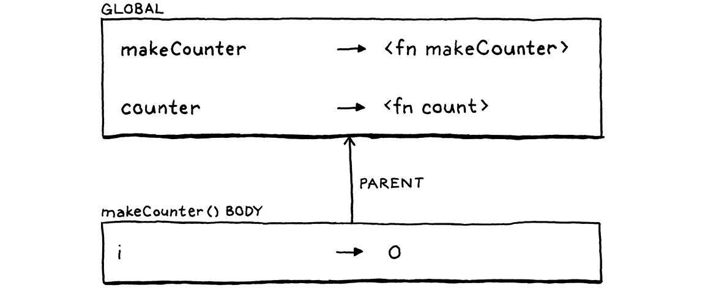
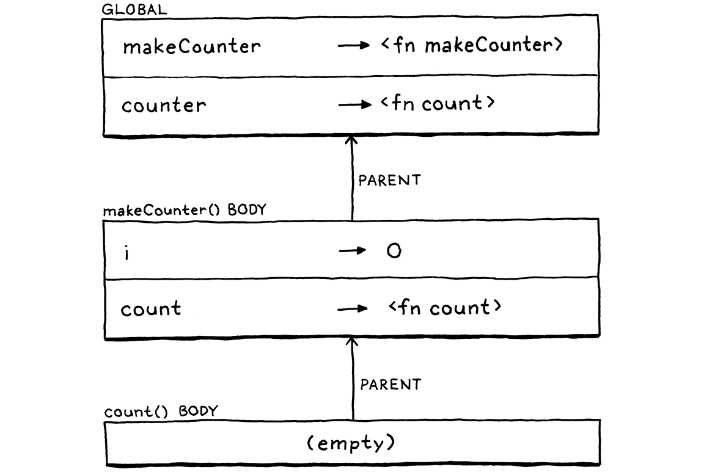

Functions
This book is a work in progress!
×If you see a mistake, find something unclear, or have a suggestion, please let me know. To follow its progress, please join the mailing list:
(I post about once a month. Don’t worry, I won’t spam you.)
And that is also the way the human mind works—by the compounding of old ideas into new structures that become new ideas that can themselves be used in compounds, and round and round endlessly, growing ever more remote from the basic earthbound imagery that is each language’s soil.
Douglas R. Hofstadter, I Am a Strange Loop
This chapter marks the culmination of a lot of hard work. The previous chapters add useful functionality in their own right, but each also supplies a piece of a puzzle. We’ll take those pieces—expressions, statements, variables, control flow, and lexical scope—add a couple more, and assemble them all into support for real user-defined functions and function calls.
10 . 1 Function Calls
You’re certainly familiar with C-style function call syntax, but the grammar is more subtle than you may realize. Calls are typically to named functions like:
average(1, 2);
But the name of the function being called isn’t actually part of the call syntax. The thing being called—the callee—can be any expression that evaluates to a function. (Well, it does have to be a pretty high precedence expression, but parentheses take care of that.) For example:
getCallback()();
There are two call expressions here. The first pair of parentheses has
getCallback as its callee. But the second call has the entire getCallback()
expression as its callee. It is the parentheses following an expression that
indicate a function call. You can think of it sort of like a postfix operator
that starts with (.
This “operator” has higher precedence than any other operator, even the unary
ones. So we slot it into the grammar by having the unary rule bubble up to a
new call rule:
unary → ( "!" | "-" ) unary | call ; call → primary ( "(" arguments? ")" )* ;
This rule matches a primary expression followed by zero or more function calls. If there are no parentheses, this parses a bare primary expression. Otherwise, each call is recognized by a pair of parentheses with an optional list of arguments inside. The argument list grammar is:
arguments → expression ( "," expression )* ;
This rule requires at least one argument expression, followed by zero or more
other expressions, each preceded by a comma. To handle zero-argument calls, the
call rule itself considers the entire arguments production optional.
I admit, this seems more grammatically awkward than you’d expect for the incredibly common “zero or more comma-separated things” pattern. There are some sophisticated metasyntaxes that handle this better, but in our EBNF and many language specs I’ve seen, it is this cumbersome.
Over in our syntax tree generator, we add a new node:
"Binary : Expr left, Token operator, Expr right",
in main()
"Call : Expr callee, Token paren, List<Expr> arguments",
"Grouping : Expr expression",
It stores the callee expression and a list of expressions for the arguments. It also stores the token for the closing parenthesis. We’ll use that token’s location when we report a runtime error caused by a function call.
Crack open the parser. Where unary() used to go straight to primary(),
change it to call, well, call():
return new Expr.Unary(operator, right); }
in unary()
replace 1 line
return call();
}
Its definition is:
add after unary()
private Expr call() { Expr expr = primary(); while (true) { if (match(LEFT_PAREN)) { expr = finishCall(expr); } else { break; } } return expr; }
The code here doesn’t quite line up with the grammar rules. I moved a few things
around to make the code cleaner—one of the luxuries we have with a
hand-written parser. But it’s roughly similar to how we parse infix operators.
First, we parse a primary expression, the “left operand” to the call. Then, each
time we see a (, we call finishCall() to parse the call expression using the
previously parsed expression as the callee. The returned expression becomes the
new expr and we loop to see if the result is itself called.
The while (true) and the explicit break look dumb. It would be simpler as
while (match(LEFT_PAREN)). It will make sense later when we add more code to
this function to handle properties on objects.
The code to parse the argument list is in this helper:
add after unary()
private Expr finishCall(Expr callee) { List<Expr> arguments = new ArrayList<>(); if (!check(RIGHT_PAREN)) { do { arguments.add(expression()); } while (match(COMMA)); } Token paren = consume(RIGHT_PAREN, "Expect ')' after arguments."); return new Expr.Call(callee, paren, arguments); }
This is more or less the arguments grammar rule translated to code, except
that we also handle the zero-argument case. We check for that case first by
seeing if the next token is ). If it is, we don’t try to parse any arguments.
Otherwise, we parse an expression, then look for a comma indicating that there is another argument after that. We keep doing that as long as we find commas after each expression. When we don’t find a comma, then the argument list must be done and we consume the expected closing parenthesis. Finally, we wrap the callee and those arguments up into a call expression.
10 . 1 . 1 Maximum argument counts
Right now, the loop where we parse arguments has no bound. If you want to call a function and pass a million arguments to it, the parser would have no problem with it. Do we want to limit that?
Other languages have various approaches. The C standard says a conforming implementation has to support at least 127 arguments to a function, but doesn’t say there’s any upper limit. The Java specification says a method can accept no more than 255 arguments.
Our Java interpreter for Lox doesn’t really need a limit, but having a maximum number of arguments will simplify our bytecode interpreter in part three. We want our two interpreters to be compatible with each other, even in weird corner cases like this, so we’ll add the same limit to jlox.
do {
in finishCall()
if (arguments.size() >= 255) { error(peek(), "Cannot have more than 255 arguments."); }
arguments.add(expression());
Note that the code here reports an error if it encounters too many arguments, but it doesn’t throw the error. Throwing it is how we kick into panic mode which is what we want if the parser is in a confused state and doesn’t know where it is in the grammar anymore. But here, the parser is still in a perfectly valid state—it just found too many arguments. So it reports the error and keeps on keepin’ on.
10 . 1 . 2 Interpreting function calls
We don’t have any functions we can call, so it seems weird to start implementing this, but we’ll worry about that when we get there. First, our interpreter needs a new import:
import java.util.ArrayList;
import java.util.List;
As always, interpretation starts with a new visit method for our new call expression node:
add after visitBinaryExpr()
@Override public Object visitCallExpr(Expr.Call expr) { Object callee = evaluate(expr.callee); List<Object> arguments = new ArrayList<>(); for (Expr argument : expr.arguments) { arguments.add(evaluate(argument)); } LoxCallable function = (LoxCallable)callee; return function.call(this, arguments); }
First, we evaluate the expression for the callee. Typically, this expression is just an identifier that looks up the function by its name, but it could be anything. Then we evaluate each of the argument expressions in order and store the resulting values in a list.
Once we’ve got the callee and the arguments ready, all that remains is to
perform the call. We do that by casting the callee to a LoxCallable and then invoking a call() method on it.
The Java representation of any Lox object that can be called like a function
will implement this interface. That includes user-defined functions, naturally,
but also class objects since classes are “called” to construct new instances.
We’ll also use it for one more purpose shortly.
There isn’t too much to it:
create new file
package com.craftinginterpreters.lox; import java.util.List; interface LoxCallable { Object call(Interpreter interpreter, List<Object> arguments); }
We pass in the interpreter in case the class implementing call() needs it. We
also give it the list of evaluated argument values. The implementer’s job is
then to return the value that the call expression produces.
10 . 1 . 3 Call type errors
Before we get to implementing LoxCallable, we need to make the visit method a little more robust. It currently ignores a couple of failure modes that we can’t pretend won’t occur. First, what happens if the callee isn’t actually something you can call? What if you try to do this:
"totally not a function"();
Strings aren’t callable in Lox. The runtime representation of a Lox string is a Java string, so when we cast that to LoxCallable, the JVM will throw a ClassCastException. We don’t want our interpreter to vomit out some nasty Java stack trace and die. Instead, we need to check the type ourselves first:
}
in visitCallExpr()
if (!(callee instanceof LoxCallable)) { throw new RuntimeError(expr.paren, "Can only call functions and classes."); }
LoxCallable function = (LoxCallable)callee;
We still throw an exception, but now we’re throwing our own runtime exception type, one that the interpreter knows how to catch and report gracefully.
10 . 1 . 4 Checking arity
The other problem relates to the function’s arity. Arity is the fancy term for the number of arguments a function or operation expects. Unary operators have arity one, binary operators two, etc. With functions, the arity is determined by the number of parameters it declares:
fun add(a, b, c) { print a + b + c; }
This function defines three parameters, a, b, and c, so its arity is
three and it expects three arguments. So what if you try to call it like this:
add(1, 2, 3, 4); // Too many. add(1, 2); // Too few.
Different languages take different approaches to this problem. Of course, most
statically-typed languages check this at compile time and refuse to compile the
code if the argument count doesn’t match the function’s arity. JavaScript
discards any extra arguments you pass. If you don’t pass enough, it fills in the
missing parameters with the magic sort-of-like-null-but-not-really value
undefined. Python is stricter. It raises a runtime error if the argument list
is too short or too long.
I think the latter is a better approach. Passing the wrong number of arguments is almost always a bug, and it’s a mistake I do make in practice. Given that, the sooner the implementation draws my attention to it, the better. So for Lox, we’ll take Python’s approach. Before invoking the callable, we check to see if the argument list’s length matches the callable’s arity:
LoxCallable function = (LoxCallable)callee;
in visitCallExpr()
if (arguments.size() != function.arity()) { throw new RuntimeError(expr.paren, "Expected " + function.arity() + " arguments but got " + arguments.size() + "."); }
return function.call(this, arguments);
That requires a new method on the LoxCallable interface to ask it its arity:
interface LoxCallable {
in interface LoxCallable
int arity();
Object call(Interpreter interpreter, List<Object> arguments);
We could push the arity checking into the concrete implementation of call().
But, since we’ll have multiple classes implementing LoxCallable, that would end
up with redundant validation spread across a few classes. Hoisting it up into
the visit method lets us do it in one place.
10 . 2 Native Functions
We can theoretically call functions, but we have no functions to call. Before we get to user-defined functions, now is a good time to introduce a vital but often overlooked facet of language implementations—native functions. These are functions that the interpreter exposes to user code but that are implemented in the host language (in our case Java), not the language being implemented (Lox).
Sometimes these functions are called primitives, external functions, or foreign functions. Since these functions can be called while the user’s program is running, they form part of the implementation’s runtime. A lot of programming language books gloss over these, because they aren’t conceptually interesting. They’re mostly grunt work.
But when it comes to making your language actually good at doing useful stuff, the native functions your implementation provides are key. They provide access to the fundamental services that all programs are defined in terms of. If you don’t provide native functions to access the file system, a user’s going to have a hell of a time writing a program that reads and displays a file.
Many languages also allow users to provide their own native functions. The mechanism for doing so is called a foreign function interface (FFI), native extension, native interface, or something along those lines. These are nice because they free the language implementer from providing access to every single capability the underlying platform supports. We won’t define an FFI for jlox, but we will add one native function to give you an idea of what it looks like.
10 . 2 . 1 Telling time
When we get to part three and start working on a much more efficient implementation of Lox, we’re going to care deeply about performance. Performance work requires measurement and that in turn means benchmarks. These are programs that measure the time it takes to exercise some corner of the interpreter.
We could measure the time it takes to start up the interpreter, run the benchmark, and exit, but that adds a lot of overhead—JVM startup time, OS shenanigans, etc. That stuff does matter, of course, but if you’re just trying to validate an optimization to some corner of the interpreter, you don’t want that overhead obscuring your results.
A nicer solution is to have the benchmark script itself measure the time elapsed between two points in the code. To do that, a Lox program needs to be able to tell time. There’s no way to do that now—you can’t implement a useful clock “from scratch” without access to the underlying clock on the computer.
So we’ll add clock(), a native function that returns the number of seconds
that have passed since some fixed point in time. The difference between two
successive invocations tell you how much time elapsed between the two calls.
This function is defined in the global scope, so lets ensure the interpreter has
access to that:
class Interpreter implements Expr.Visitor<Object>, Stmt.Visitor<Void> {
in class Interpreter
replace 2 lines
final Environment globals = new Environment(); private Environment environment = globals;
void interpret(List<Stmt> statements) {
The environment field in the interpreter changes as we enter and exit local
scopes. It tracks the current environment. This new globals field holds a
fixed reference to the outermost global environment.
When we instantiate an Interpreter, we stuff the native function in that global scope:
in class Interpreter
Interpreter() { globals.define("clock", new LoxCallable() { @Override public int arity() { return 0; } @Override public Object call(Interpreter interpreter, List<Object> arguments) { return (double)System.currentTimeMillis() / 1000.0; } @Override public String toString() { return "<native fn>"; } }); }
This defines a variable named “clock”. Its value is a
Java anonymous class that implements LoxCallable. The clock() function takes
no arguments, so its arity is zero. The implementation of call() calls the
corresponding Java function and converts the result to a double value in
seconds.
If we wanted to add other native functions—reading input from the user, working with files, etc.—we could add them each as their own anonymous class that implements LoxCallable. But for the book, this one is really all we need.
Let’s get ourselves out of the function-defining business and let our users take over…
10 . 3 Function Declarations
We finally get to add a new production to the declaration rule we introduced
back when we added variables. Function declarations, like variables, bind a new
name. That means they are only allowed in places where
a declaration is permitted.
declaration → funDecl | varDecl | statement ;
That references this new rule:
funDecl → "fun" function ; function → IDENTIFIER "(" parameters? ")" block ;
The main funDecl rule uses a separate helper rule function. A function
declaration statement is the fun keyword followed by the actual function-y
stuff. When we get to classes, we’ll reuse that function rule for declaring
methods. Those look similar to function declarations, but aren’t preceded by
fun.
The function itself is a name followed by the parenthesized parameter list and the body. The body is always a braced block, using the same grammar rule that block statements use. The parameter list uses this rule:
parameters → IDENTIFIER ( "," IDENTIFIER )* ;
It’s like the earlier arguments rule, except that each parameter is an
identifier, not an expression. That’s a lot of new syntax for the parser to chew
through, but the resulting AST node isn’t too bad:
"Expression : Expr expression",
in main()
"Function : Token name, List<Token> params, List<Stmt> body",
"If : Expr condition, Stmt thenBranch, Stmt elseBranch",
It has a name, a list of parameters—their names—and then the body. We store the body as the list of statements contained inside the curly braces.
Over in the parser, we weave the new grammar into declaration():
try {
in declaration()
if (match(FUN)) return function("function");
if (match(VAR)) return varDeclaration();
Like other statements, a function is recognized by the leading keyword. When we
encounter fun, we call function. That corresponds to the function grammar
rule since we already matched and consumed the fun keyword. We’ll build that
method up a piece at a time, starting with:
add after expressionStatement()
private Stmt.Function function(String kind) { Token name = consume(IDENTIFIER, "Expect " + kind + " name."); }
Right now, it only consumes the identifier token for the function’s name. You
might be wondering about that funny little kind parameter. Just like we reuse
the grammar rule, we’ll reuse the function() method later to parse methods
inside classes. When we do that, we’ll pass in “method” for kind so that the
error messages are specific to the kind of declaration being parsed.
Next, we parse the parameter list and the pair of parentheses wrapped around it:
Token name = consume(IDENTIFIER, "Expect " + kind + " name.");
in function()
consume(LEFT_PAREN, "Expect '(' after " + kind + " name."); List<Token> parameters = new ArrayList<>(); if (!check(RIGHT_PAREN)) { do { if (parameters.size() >= 255) { error(peek(), "Cannot have more than 255 parameters."); } parameters.add(consume(IDENTIFIER, "Expect parameter name.")); } while (match(COMMA)); } consume(RIGHT_PAREN, "Expect ')' after parameters.");
}
This is like the code for handling arguments in a call, except not split out into a helper method. The outer if statement handles the zero parameter case, and the inner while loop parses parameters as long as we find commas to separate them. The result is the list of tokens for each parameter’s name.
Just like we do with arguments at function calls, we validate at parse time that you don’t exceed the maximum number of parameters a function is allowed to have.
Finally, we parse the body and wrap it all up in a function node:
consume(RIGHT_PAREN, "Expect ')' after parameters.");
in function()
consume(LEFT_BRACE, "Expect '{' before " + kind + " body."); List<Stmt> body = block(); return new Stmt.Function(name, parameters, body);
}
Note that we consume the { at the beginning of the body here before calling block(). That’s because block()
assumes that token has already been matched. Consuming it here lets us report a
more precise error message if the { isn’t found since we know it’s in the
context of a function declaration.
10 . 4 Function Objects
We’ve got some syntax parsed so usually we’re ready to interpret, but first we need to think about how to represent a Lox function in Java. We need to keep track of the parameters so that we can bind them to argument values when the function is called. And, of course, we need to keep around the code for the body of the function so that we can execute it.
That’s basically what the Stmt.Function class is. Could we just use that? Almost, but not quite. We also need a class that implements LoxCallable so that we can call it. We don’t want the runtime phase of the interpreter to bleed into the front-end’s syntax classes so we don’t want Stmt.Function itself to implement that. Instead, we wrap it in a new class:
create new file
package com.craftinginterpreters.lox; import java.util.List; class LoxFunction implements LoxCallable { private final Stmt.Function declaration; LoxFunction(Stmt.Function declaration) { this.declaration = declaration; } }
Then it implements call():
add after LoxFunction()
@Override public Object call(Interpreter interpreter, List<Object> arguments) { Environment environment = new Environment(interpreter.globals); for (int i = 0; i < declaration.params.size(); i++) { environment.define(declaration.params.get(i).lexeme, arguments.get(i)); } interpreter.executeBlock(declaration.body, environment); return null; }
This handful of lines of code is one of the most fundamental, powerful pieces of our interpreter. As we saw in the chapter on statements and state, managing name environments is a core part of a language implementation. Functions are deeply tied to that.
Core to functions are the idea of parameters, and that a function encapsulates those parameters—no other code outside of the function can see them. This means each function gets its own environment where it stores those variables.
Further, this environment must be created dynamically. Each function call gets its own environment. Otherwise, recursion would break. If there are multiple calls to the same function in play at the same time, each needs its own environment, even though they are all calls to the same function.
For example, here’s a convoluted way to count to three:
fun count(n) { if (n > 1) count(n - 1); print n; } count(3);
Imagine we pause the interpreter right at the point where it’s about to print 1
in the innermost nested call. The outer calls to print 2 and 3 haven’t printed
their values yet, so there must be environments somewhere in memory that still
store the fact that n is bound to 3 in one context, 2 in another, and 1 in the
innermost, like:

That’s why we create a new environment at each call, not at the function
declaration. The call() method we saw earlier does that. At the beginning of
the call, it creates a new environment. Then it walks the parameter and argument
lists in lockstep. For each pair, it creates a new variable with the parameter’s
name and binds it to the argument’s value.
So for a program like this:
fun add(a, b, c) { print a + b + c; } add(1, 2, 3);
The interpreter creates something like this:

Then call() tells the interpreter to execute the body of the function in this
new function-local environment. Up until now, the current environment was the
environment where the function was being called. Now, we teleport from there
inside the new parameter space we’ve created for the function.
This is all that’s required to pass data into the function. By using different environments when we execute the body, calls to the same function with the same code can produce different results.
Once the body of the function has finished executing, executeBlock() discards
that function-local environment and restores the previous one that was active
back at the callsite. Finally, call() returns null, which returns nil to
the caller. We’ll add return values later.
Mechanically, the code is pretty simple. Walk a couple of lists. Bind some new variables. Call a method. But this is where the crystalline code of the function declaration becomes a living, breathing invocation. This is one of my favorite snippets in this entire book. Feel free to take a moment to meditate on it if you’re so inclined.
Done? OK. Note when we bind the parameters, we assume the parameter and argument
lists have the same length. This is safe because visitCallExpr() checks the
arity before calling call(). It needs to know the function’s arity to do that:
add after LoxFunction()
@Override public int arity() { return declaration.params.size(); }
That’s most of our object representation. While we’re in here, we may as well
implement toString():
add after LoxFunction()
@Override public String toString() { return "<fn " + declaration.name.lexeme + ">"; }
This gives nicer output if a user decides to print a function value:
fun add(a, b) { print a + b; } print add; // "<fn add>".
10 . 4 . 1 Interpreting function declarations
We’ll come back and refine LoxFunction soon, but that’s enough to get started. Now we can visit a function declaration:
add after visitExpressionStmt()
@Override public Void visitFunctionStmt(Stmt.Function stmt) { LoxFunction function = new LoxFunction(stmt); environment.define(stmt.name.lexeme, function); return null; }
This is similar to how we interpret other literal expressions. We take a function syntax node—a compile time representation of the function—and convert it to its runtime representation. Here, that’s a LoxFunction that wraps the syntax node.
Function declarations are different from other literal nodes in that the declaration also binds the resulting object to a new variable. So, after creating the LoxFunction, we create a new binding in the current environment and store a reference to it there.
With that, we can define and call our own functions all within Lox. Give it a try:
fun sayHi(first, last) { print "Hi, " + first + " " + last + "!"; } sayHi("Dear", "Reader");
I don’t know about you, but that looks like an honest-to-God programming language to me.
10 . 5 Return Statements
We can get data into functions by passing parameters, but we’ve got no way to get results back out. If Lox was an expression-oriented language like Ruby or Scheme, the body would be an expression whose value is implicitly the function’s result. But in Lox, the body of a function is a list of statements which don’t produce values, so we need dedicated syntax for emitting a result. In other words, return statements. I’m sure you can guess the grammar already:
statement → exprStmt | forStmt | ifStmt | printStmt | returnStmt | whileStmt | block ; returnStmt → "return" expression? ";" ;
We’ve got one more—the final, in fact—production under the venerable
statement rule. A return statement is the return keyword followed by an
optional expression and terminated with a semicolon.
The return value is optional to support exiting early from a function that doesn’t return a useful value. In statically-typed languages, “void” functions don’t return a value and non-void ones do. Since Lox is dynamically typed, there are no true void functions. The compiler has no way of preventing you from taking the result value of a call to a function that doesn’t contain a return statement:
fun procedure() { print "don't return anything"; } var result = procedure(); print result; // ?
This means every Lox function must return something, even if it contains no
return statements at all. We use nil for this, which is why LoxFunction’s
implementation of call() returns null at the end. In that same vein, if you
omit the value in a return statement, we simply treat it as:
return nil;
Over in our AST generator, add a new node:
"Print : Expr expression",
in main()
"Return : Token keyword, Expr value",
"Var : Token name, Expr initializer",
It keeps the return keyword token so we can use its location for error
reporting, and the value being returned, if any. We parse it like other
statements, by recognizing the initial keyword:
if (match(PRINT)) return printStatement();
in statement()
if (match(RETURN)) return returnStatement();
if (match(WHILE)) return whileStatement();
That branches out to:
add after printStatement()
private Stmt returnStatement() { Token keyword = previous(); Expr value = null; if (!check(SEMICOLON)) { value = expression(); } consume(SEMICOLON, "Expect ';' after return value."); return new Stmt.Return(keyword, value); }
After snagging the previously-consumed return keyword, we look for a value
expression. Since many different tokens can potentially start an expression,
it’s hard to tell if a return value is present. Instead, we check if it’s
absent. Since a semicolon can’t occur in an expression, if the next token is
that, we know there must not be a value.
10 . 5 . 1 Returning from calls
Interpreting a return statement is tricky. You can return from anywhere within the body of a function, even deeply nested inside other statements. When the return is executed, the interpreter needs to jump all the way out of whatever context it’s currently in and cause the function call to complete, like some kind of jacked up control flow construct.
For example, say we’re running this program and we’re about to execute the return statement:
fun count(n) { while (n < 100) { if (n == 3) return n; // <-- print n; n = n + 1; } } count(1);
The Java call stack currently looks roughly like this:
Interpreter.visitReturnStmt() Interpreter.visitIfStmt() Interpreter.executeBlock() Interpreter.visitBlockStmt() Interpreter.visitWhileStmt() Interpreter.executeBlock() LoxFunction.call() Interpreter.visitCallExpr()
We need to get from the top of the stack all the way back to call(). I don’t
know about you, but to me that sounds like exceptions. When we execute a return
statement, we’ll use an exception to unwind the interpreter past the visit
methods of all of the containing statements back to the code that began
executing the body.
The visit method for our new AST node looks like this:
add after visitPrintStmt()
@Override public Void visitReturnStmt(Stmt.Return stmt) { Object value = null; if (stmt.value != null) value = evaluate(stmt.value); throw new Return(value); }
If we have a return value, we evaluate it, otherwise, we use nil. Then we take
that value and wrap it in a custom exception class and throw it. That class is:
create new file
package com.craftinginterpreters.lox; class Return extends RuntimeException { final Object value; Return(Object value) { super(null, null, false, false); this.value = value; } }
It’s a wrapper around the return value, with the accoutrements that Java
requires for a runtime exception class. The weird super constructor call with
those nulls and falses disables some JVM machinery that we don’t need. Since
we’re using our exception class for control flow
and not actual error handling, we don’t need overhead like stack traces.
We want this to unwind all the way to where the function call began, the
call() method in LoxFunction:
arguments.get(i)); }
in call()
replace 1 line
try { interpreter.executeBlock(declaration.body, environment); } catch (Return returnValue) { return returnValue.value; }
return null;
We wrap the call to executeBlock() in a try-catch block. When it catches a
return exception, it pulls out the value and makes that the return value from
call(). If it never catches one of these exceptions, it means the function
reached the end of its body without hitting a return statement. In that case, it
implicitly returns nil.
Let’s try it out. We finally have enough power to support this classic example—a recursive function to calculate Fibonacci numbers:
fun fibonacci(n) { if (n <= 1) return n; return fibonacci(n - 2) + fibonacci(n - 1); } for (var i = 0; i < 20; i = i + 1) { print fibonacci(i); }
This tiny program exercises almost every language feature we have spent the past several chapters implementing—expressions, arithmetic, branching, looping, variables, functions, function calls, parameter binding, and returns.
10 . 6 Local Functions and Closures
Our functions are pretty full-featured, but there is one hole to patch. In fact, it’s a big enough gap that we’ll spend most of the next chapter sealing it up, but we can get started here.
LoxFunction’s implementation of call() creates a new environment where it
binds the function’s parameters. When I showed you that code, I glossed over one
important point: What is the parent of that environment?
Right now, it is always globals, the top level global environment. That way,
if an identifier isn’t defined inside the function body itself, the interpreter
can look outside the function in the global scope to find it. In the Fibonacci
example, that’s how the interpreter is able to look up the recursive call to
fibonacci inside the function’s own body—fibonacci is a global variable.
But recall that in Lox, function declarations are allowed anywhere a name can be bound. That includes the top level of a Lox script, but also the inside of blocks or other functions. Lox supports local functions that are defined inside another function, or nested inside a block.
Consider this classic example:
fun makeCounter() { var i = 0; fun count() { i = i + 1; print i; } return count; } var counter = makeCounter(); counter(); // "1". counter(); // "2".
Here, count() uses i, which is declared outside of itself in the containing
function makeCounter(). makeCounter() returns a reference to the count()
function and then its own body finishes executing completely.
Meanwhile, the top level code invokes the returned count() function. That
executes the body of count(), which assigns to and reads i, even though the
function where i was defined has already exited.
If you’ve never encountered a language with nested functions before, this might
seem crazy, but users do expect it to work. Alas, if you run it now, you get an
undefined variable error in the call to counter() when the body of count()
tries to look up i. That’s because the environment chain in effect looks like
this:

When we call count() (through the reference to it stored in counter), we
create a new empty environment for the function body. The parent of that is the
global environment. We lost the environment for makeCounter() where i is
bound.
Let’s go back in time a bit. Here’s what the environment chain looks like right
when we declare count() inside the body of makeCounter():

So at the point where the function is declared, we can see i. But when we
return from makeCounter() and exit its body, the interpreter discards that
environment. Since the interpreter isn’t keeping the environment surrounding
count() around, it’s up to the function object itself to hang on to it.
This data structure is called a “closure” because it “closes over” and holds onto the surrounding variables where the function is declared. Closures have been around since the early Lisp days, and language hackers have come up with all manner of ways to implement them. For jlox, we’ll do the simplest thing that works. In LoxFunction, we add a field to store an environment:
private final Stmt.Function declaration;
in class LoxFunction
private final Environment closure;
We initialize that in the constructor:
constructor LoxFunction()
replace 1 line
LoxFunction(Stmt.Function declaration, Environment closure) { this.closure = closure;
this.declaration = declaration;
When we create a LoxFunction, we capture the current environment:
public Void visitFunctionStmt(Stmt.Function stmt) {
in visitFunctionStmt()
replace 1 line
LoxFunction function = new LoxFunction(stmt, environment);
environment.define(stmt.name.lexeme, function);
This is the environment that is active when the function is declared not when
it’s called, which is what we want. It represents the lexical scope
surrounding the function declaration. Finally, when we call the function, we use
that environment instead of going straight to globals:
public Object call(Interpreter interpreter, List<Object> arguments) {
in call()
replace 1 line
Environment environment = new Environment(closure);
for (int i = 0; i < declaration.params.size(); i++) {
This creates an environment chain that goes from the function’s body out through the environments where the function is declared all the way out to the global scope. The runtime environment chain matches the textual nesting of the source code like we want. The end result looks like this:

Now, as you can see, the interpreter can still find i when it needs to because
it’s in the middle of the environment chain. Try running that makeCounter()
example now. It works!
Functions let us abstract over, reuse, and compose code. Lox is much more powerful than the rudimentary arithmetic calculator it used to be. Alas, in our rush to cram closures in, we have let a tiny bit of dynamic scoping leak into the interpreter. In the next chapter, we will explore more deeply into lexical scope and close that hole.
Challenges
-
Our interpreter carefully checks that the number of arguments passed to a function matches the number of parameters it expects. Since this check is done at runtime on every call, it has a real performance cost. Smalltalk implementations don’t have that problem. Why not?
-
Lox’s function declaration syntax performs two independent operations. It creates a function and also binds it to a name. This improves usability for the common case where you do want to associate a name with the function. But in functional-styled code, you often want to create a function to immediately pass it to some other function or return it. In that case, it doesn’t need a name.
Languages that encourage a functional style usually support “anonymous functions” or “lambdas”—an expression syntax that creates a function without binding it to a name. Add anonymous function syntax to Lox so that this works:
fun thrice(fn) { for (var i = 1; i <= 3; i = i + 1) { fn(i); } } thrice(fun (a) { print a; }); // "1". // "2". // "3".
How do you handle the tricky case of an anonymous function expression occurring in an expression statement:
fun () {};
-
Is this program valid?
fun scope(a) { var a = "local"; }
In other words, are a function’s parameters in the same scope as its local variables, or in an outer scope? What does Lox do? What about other languages you are familiar with? What do you think a language should do?